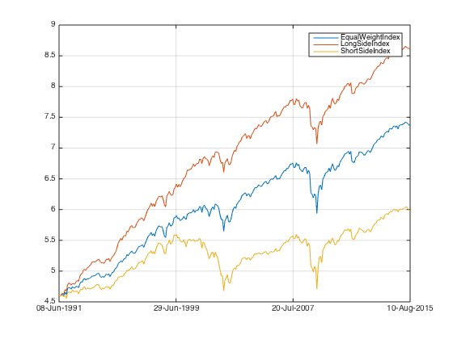
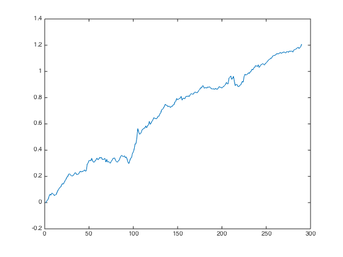
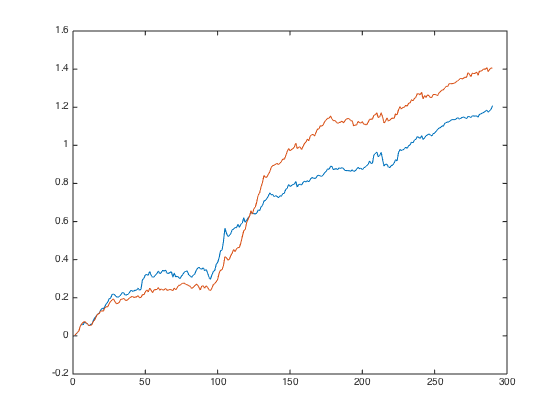
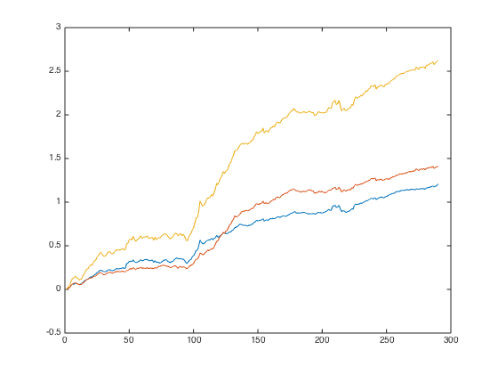
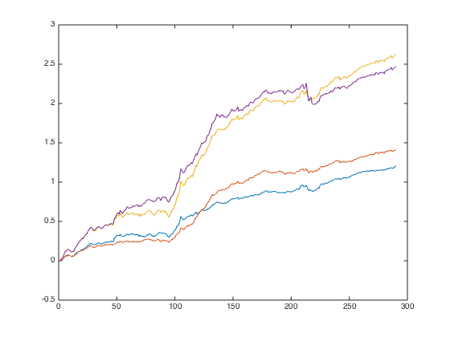

Combined Factors - The Short Side
so far I have been examing the long side of the factor portfolio, i.e. those securities with high score, while using equal weighted index as hedge to achieve market neutral. What was going on on the short side? Let's take a look..
Contents
Preparation
Let's load the data from ..
load('../data_equity_list_us.mat'); load('../data_field_list.mat'); load('../data_historical_data_us.mat');
take data sample, load data & the list
index = datasample(1:1300,1000,'Replace',false);
px = fun_load_price(history_us, equity_list_us, index);
px = fun_clean_data(px);
list = equity_list_us(index,:);
load observations
mom_ts = fun_calculate_mom(px); pb_ts = fun_load_observations(history_us, equity_list_us, index,'pb'); cap_ts = fun_load_observations(history_us, equity_list_us, index,'cap'); beta_ts = fun_load_observations(history_us, equity_list_us, index,'beta'); grossmargin_ts = fun_load_observations(history_us, equity_list_us, index,'gm'); turnover_ts = fun_load_observations(history_us, equity_list_us, index,'turnover'); roa_ts = fun_load_observations(history_us, equity_list_us, index,'roa'); leverage_ts = fun_load_observations(history_us, equity_list_us, index,'leverage');
calculate score
score_mom_ts = fun_calculate_score(mom_ts,list,'sectorsort',px); score_pb_ts = -fun_calculate_score(pb_ts,list,'sectorsort',px); score_cap_ts = -fun_calculate_score(cap_ts,list,'sectorsort',px); score_beta_ts = -fun_calculate_score(beta_ts,list,'sectorsort',px); score_leverage_ts = -fun_calculate_score(leverage_ts,list,'sectorsort',px); score_roa_ts = fun_calculate_score(roa_ts,list,'sectorsort',px); score_grossmargin_ts = fun_calculate_score(grossmargin_ts,list,'sectorsort',px); score_turnover_ts = fun_calculate_score(turnover_ts,list,'sectorsort',px); score_quality_ts = score_leverage_ts+score_roa_ts+score_grossmargin_ts+score_turnover_ts; score_quality_ts = fun_combine_score(score_quality_ts);
Trim
score_mom_ts = score_mom_ts(75:end);
score_pb_ts = score_pb_ts(75:end);
score_cap_ts = score_cap_ts(75:end);
score_beta_ts = score_beta_ts(75:end);
score_quality_ts = score_quality_ts(75:end);
score_ts = {score_mom_ts; score_pb_ts; score_cap_ts; score_beta_ts; score_quality_ts};
px = px(75:end);
Combine score
score_weight = [0.2 0 0.4 0.1 0.3]; score_combined_ts = score_mom_ts*score_weight(1) + score_pb_ts*score_weight(2) + score_cap_ts*score_weight(3) + score_beta_ts*score_weight(4) + score_quality_ts*score_weight(5); score_combined_ts = fun_combine_score(score_combined_ts);
Benchmark Performance
portfolio_weight_eq_weight_ts = fun_portfolio_weight_sector_neutral(score_combined_ts,'equalweight'); portfolio_rt_ts = fun_portfolio_return(px, portfolio_weight_eq_weight_ts); benchmark = [100; 100*exp(fts2mat(cumsum(portfolio_rt_ts)))]; benchmark_ts = fints(px.dates, benchmark,'EqualWeightIndex'); portfolio_weight_longside_ts = fun_portfolio_weight_sector_neutral(score_combined_ts,'longonly'); portfolio_rt_ts = fun_portfolio_return(px, portfolio_weight_longside_ts); benchmark_longside = [100; 100*exp(fts2mat(cumsum(portfolio_rt_ts)))]; benchmark_longside_ts = fints(px.dates, benchmark_longside,'LongSideIndex'); portfolio_weight_shortside_ts = fun_portfolio_weight_sector_neutral(-score_combined_ts,'longonly'); portfolio_rt_ts = fun_portfolio_return(px, portfolio_weight_shortside_ts); benchmark_shortside = [100; 100*exp(fts2mat(cumsum(portfolio_rt_ts)))]; benchmark_shortside_ts = fints(px.dates, benchmark_shortside,'ShortSideIndex'); benchmark_all_ts = merge(benchmark_ts,benchmark_longside_ts,benchmark_shortside_ts,'sortcolumn',0); plot(log(benchmark_all_ts));
sharpe, std & return
sqrt(12)*sharpe(fts2mat(tick2ret(benchmark_all_ts))) sqrt(12)*nanstd(tick2ret(benchmark_all_ts)) 12*nanmean(tick2ret(benchmark_all_ts))
Warning: No Cash return specified. Will assume return is
0.
ans =
0.7009 1.0186 0.3855
ans =
0.1900 0.1808 0.2016
ans =
0.1329 0.1838 0.0776
doesn't the short index looks like what people on the street call 'the market'.
Factor Portfolios
I use long - equal as proxy for long side factor portfolio, as equal - short for the short side factor portfolio. long - short represents the full long-short factor portfolio.
long side.
portfolio_weight_ts = fun_portfolio_weight_sector_neutral(score_combined_ts,'longonly'); portfolio_cap_ts = fun_sequential_backtest_autoadjust(100, px, benchmark_ts, portfolio_weight_ts,false); corrcoef(fts2mat(tick2ret(portfolio_cap_ts)),fts2mat(tick2ret(benchmark_ts))) sqrt(12)*sharpe(fts2mat(tick2ret(portfolio_cap_ts)),0) sqrt(12)*std(fts2mat(tick2ret(portfolio_cap_ts))) plot(cumsum(fts2mat(tick2ret(portfolio_cap_ts)))); hold on;
ans =
1.0000 -0.2700
-0.2700 1.0000
ans =
1.1398
ans =
0.0439
 short side
portfolio_weight_ts = fun_portfolio_weight_sector_neutral(score_combined_ts,'equalweight'); portfolio_cap_ts = fun_sequential_backtest_autoadjust(100, px, benchmark_shortside_ts, portfolio_weight_ts,false); corrcoef(fts2mat(tick2ret(portfolio_cap_ts)),fts2mat(tick2ret(benchmark_ts))) sqrt(12)*sharpe(fts2mat(tick2ret(portfolio_cap_ts)),0) sqrt(12)*std(fts2mat(tick2ret(portfolio_cap_ts))) plot(cumsum(fts2mat(tick2ret(portfolio_cap_ts)))); hold on;
ans =
1.0000 0.0022
0.0022 1.0000
ans =
1.3629
ans =
0.0427
 long short
portfolio_weight_ts = fun_portfolio_weight_sector_neutral(score_combined_ts,'longonly'); portfolio_cap_ts = fun_sequential_backtest_autoadjust(100, px, benchmark_shortside_ts, portfolio_weight_ts,false); corrcoef(fts2mat(tick2ret(portfolio_cap_ts)),fts2mat(tick2ret(benchmark_ts))) sqrt(12)*sharpe(fts2mat(tick2ret(portfolio_cap_ts)),0) sqrt(12)*std(fts2mat(tick2ret(portfolio_cap_ts))) plot(cumsum(fts2mat(tick2ret(portfolio_cap_ts)))); hold on;
ans =
1.0000 -0.1483
-0.1483 1.0000
ans =
1.3551
ans =
0.0804
 long short through weight*return
portfolio_weight_ts = fun_portfolio_weight_sector_neutral(score_combined_ts,'longshort'); portfolio_rt_ts = fun_portfolio_return(px,portfolio_weight_ts); plot(cumsum(fts2mat(portfolio_rt_ts))); hold off; sqrt(12)*sharpe(fts2mat(portfolio_rt_ts),0) sqrt(12)*std(fts2mat(portfolio_rt_ts))
ans =
1.2185
ans =
0.0841
 Short side captured the crash post dotcom bubble, from the short. The dark force is strong.
imshow('darkforce.jpg');